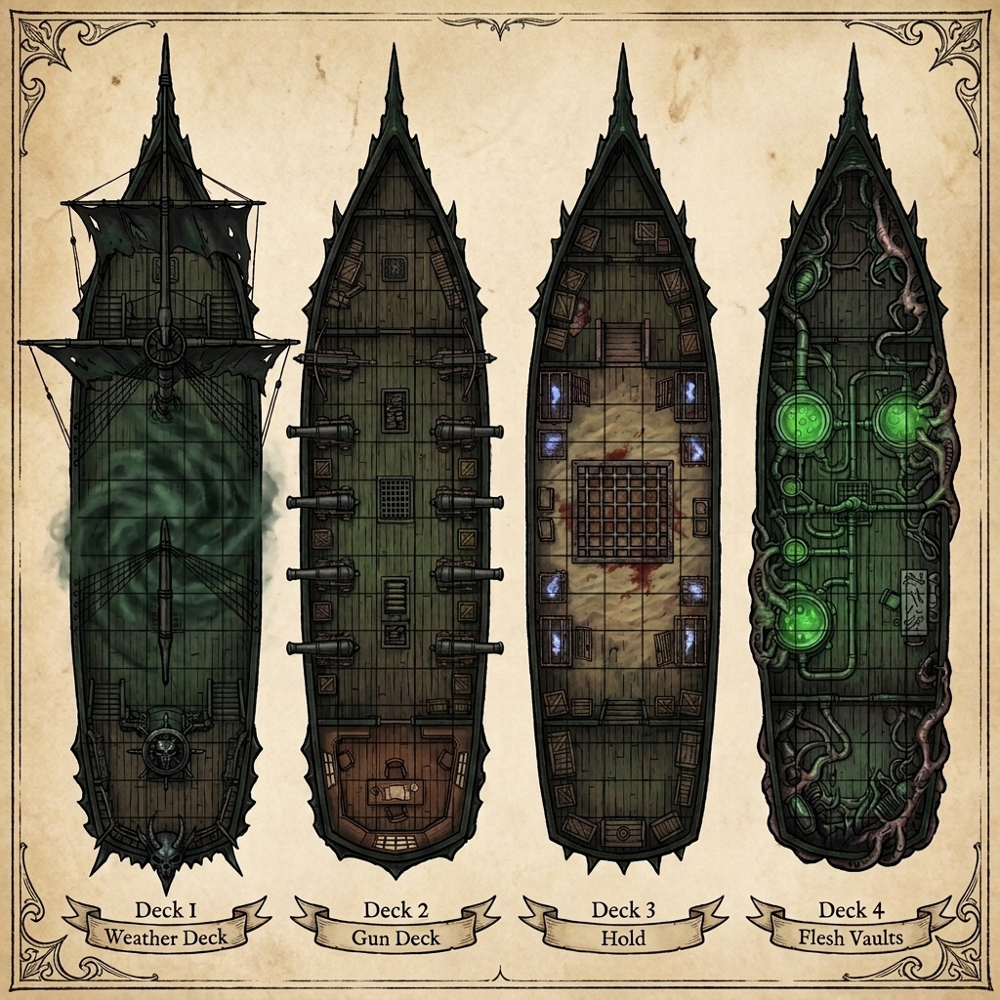
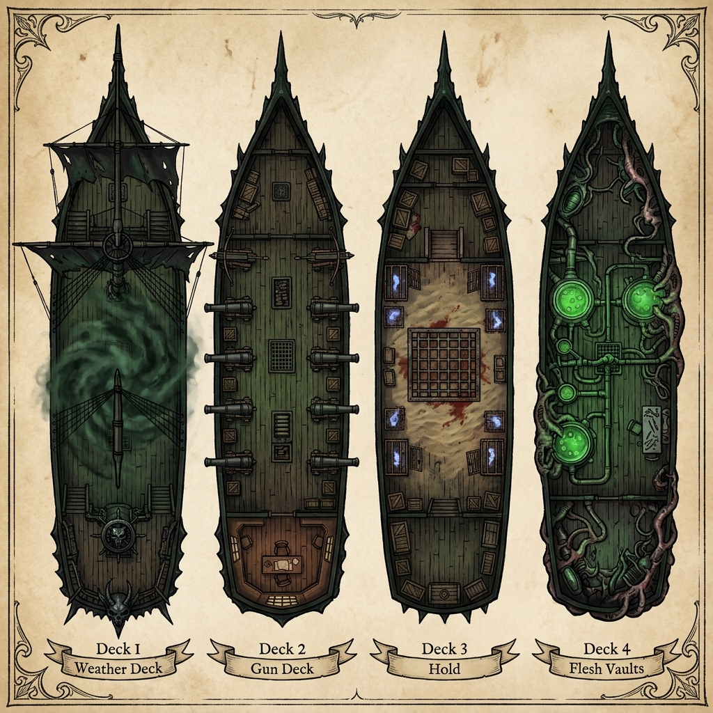
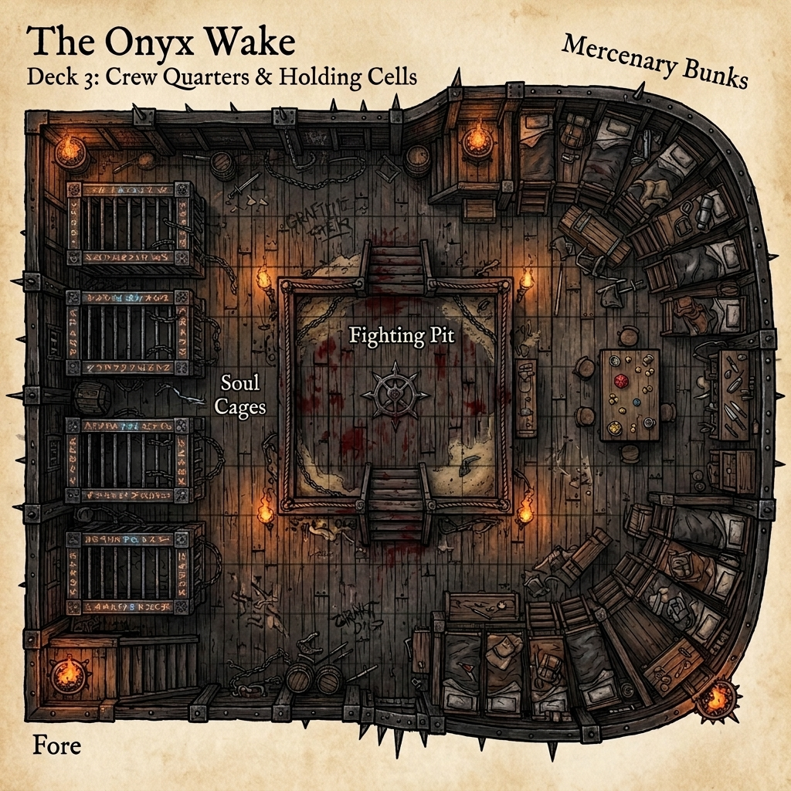
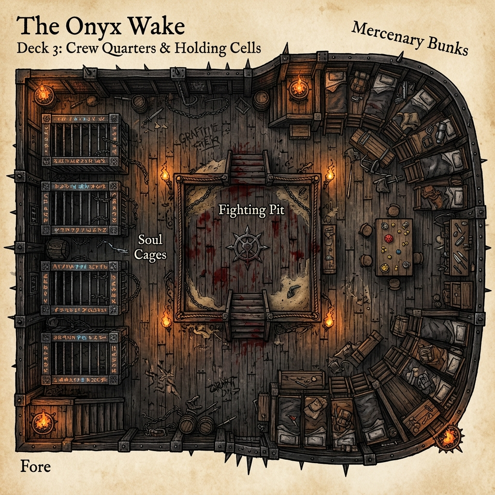
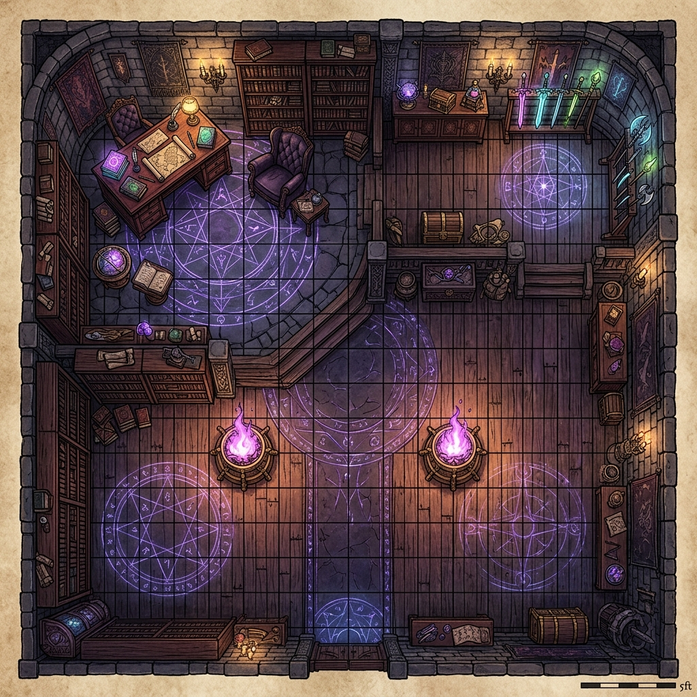
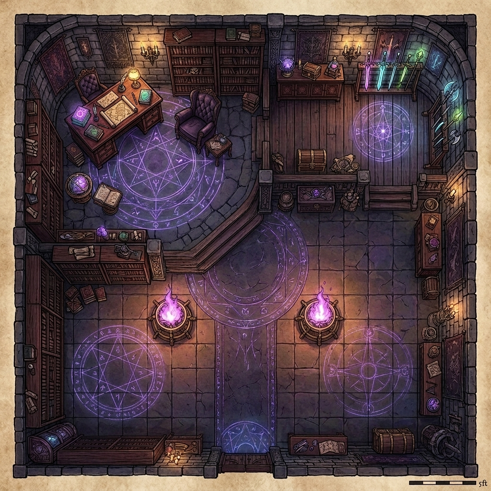

The Onyx Wake is the absolute dreadnought—the "Death Star" of the Blackwater Quay fleet. It is a colossal mobile fortress engineered specifically for fleet interception, heavy siege operations, and reality-warping battlefield control. While Suture's ship, The Bleeding Needle, serves as a quiet mobile laboratory and surgical sanctuary, the Onyx Wake is a weapon of direct, terrifying violence, leading Kael's corsair flotilla against the remnants of the Thessalan Consortium and any who challenge the sovereignty of Sablehook.
Sheathed in brutalist iron plating, fused demon-bone, and weeping necrotic wood, the ship weeps a constant trail of thick, black necrotic oil directly into the pitch-black Underdark currents. Powered by the agonizing vibrations of a planar soul-combustion engine and wielding a devastating battery of Tri-Weave (Arcane, Psionic, and Divine) weaponry, the Onyx Wake stands as the crowning achievement of the Vael-Kaelor clan's defiance against the Thessalan Consortium.






Colossal Vehicle: Space 260 ft. by 55 ft.; Height 50 ft. (plus masts).
Seaworthiness: +14; Ship Handling: +8 (coordinated by the Eternal Sentinel and Kael's crew).
Speed: Swim 40 ft. (soul-combusted paddle-screws); Overall AC: 24 (-8 size, +22 natural/iron plating).
Hardness: 20; HP: 1,200 (Break threshold 400); Rigging HP: 200.
Base Ram: 15d6 bludgeoning damage (modified to 20d6 by the Gravitic Singular-Ram, ignoring hardness).
The uppermost deck is built exceptionally wide and open, specifically designed to serve as a clearing floor for violent boarding actions. It measures 140 feet long by 40 feet wide.
The tactical heart of the vessel, measuring 120 feet long by 40 feet wide. It is cramped, loud, dark, and filled with the smell of sulfur and damp iron.
The living space for the ship's violent crew, measuring 100 feet long by 35 feet wide.
The lowest deck, serving as the surgical atelier of the darkwood flesh-stitcher, Suture.
The Onyx Wake is outfitted with an array of reality-bending weapons that fuse arcane transmutations, psionic telekinesis, and divine blood-magic, making it the most heavily armed vessel in the Underdark.
A. The Sovereign Anchor Core
A massive Adamantine Sphere is surgically sutured into the ship's primary structural spine in the keel. The sphere distorts the surrounding water, creating a perpetual displacement effect that grants the Onyx Wake a +4 deflection bonus to AC. The ship is immune to dimensional anchor, teleport block, and gravity-altering spells unless the sphere is targeted and disabled.
B. The Gravitic Singular-Ram (Prow Mandible)
The prow features a massive, jagged mandible of black iron. It uses the Adamantine Sphere's mass-control properties to manipulate gravity on impact, increasing the ship's effective mass by a factor of 50 and inducing a gravity collapse.
TTRPG Mechanics: Deal 20d6 bludgeoning and gravity damage (ignoring up to 20 points of hardness). The target vessel must succeed on a DC 25 Reflex save or have its hull structural framing fold inward, pinning it to the mandible and throwing all crew on deck prone.
C. The Sovereign Void-Lapse Lance (Siege Weapon)
Mounted on the bowsprit, this weapon combines the Resonance-Amplified Array and the Sovereign Soul-Burner, braiding void energy and transmutative fire into a ship-breaking beam.
TTRPG Mechanics: Firing requires a full round of charge. It fires a 300-ft. line, 10 ft. wide. All targets in the line take 15d6 disintegrate damage (Reflex DC 22 half). Vehicles and structures take double damage (30d6) and ignore hardness. Slain targets have their souls siphoned into the fuel cells. Cooldown: 10 minutes (100 rounds).
D. The Infernal Batteries (6 Brass Cannons)
Demonic cannons (3 port, 3 starboard) possessed by minor fire-demons, firing heavy iron shot coated in hellfire.
TTRPG Mechanics: Attack +8 ranged (range increment 150 ft.). Damage: 6d6 bludgeoning and fire damage. The target ship must succeed on a DC 18 Will save or be afflicted with the Curse of the Shadow-Weave, causing the target's sails/rigging to take 2d6 cold damage each round and introducing a 50% spell/power failure rate to anyone casting or manifesting aboard for 1 minute.
E. Boarding Harpoons (4 winches)
Winch-loaded harpoon ballistae lining the rails of Deck I, using heavy iron chains.
TTRPG Mechanics: Attack +10 ranged (range increment 100 ft.). Damage: 3d8 piercing. On a hit, the target vessel is grappled. Winding the windlasses (requires 2 crew or 1 construct) drags the target vessel 30 ft. closer at the start of the Onyx Wake's turn.
1. Captain Mikhailis Vael-Kaelor (Kael — Sovereign Corsair):
A towering, 8-foot-tall half-minotaur fey monstrosity with phase-shifting wings, displacer tentacles, and eldritch claws. He steers the ship with a wild, manic laugh, his chronal senses aligned with the ship's Sovereign Anchor to feel gravity fluctuations.
2. First Mate Dreadjaw Rellis (CR 14 Orc Enforcer — Barbarian 12 / Fighter 2):
Originally the fragile-jawed "Glassjaw Rellis" of Blackwater Quay, rebuilt through Suture's surgery and Mikhailis's Tri-Weave fey-metal jaw grafting. A towering, heavily armored Orc whose lower face is a brutal fey-metal plate. He leads boarding actions with a heavy greataxe, bellowing concussive Dread-Shouts to knock enemies prone, coordinates the Vanguard silently via his Phrenic-Node telepathy graft, and is completely immune to stunning or paralysis.
3. The Eternal Sentinel (Commander Valas Noquar):
A drow commander in worn leather armor, his lower limbs and spine completely grown into the wood of the mainmast. His eyes are blank white spheres, and his mouth twitches in silent calculations. He allows the ship to react instantly to subterranean threats, granting the ship blindsense 120 ft., mindsight 60 ft., and a +4 bonus on initiative and handling checks.
A. Sovereign Ascension (Living Construct Symbiosis)
Suture grafted the Abyssal Hunter-Squid directly into the ship's keel and Stygian fuel-intake. The Onyx Wake is now a Living Construct. Its iron hull pulses with a biological heartbeat, allowing Kael or the helmsman to command the ship telepathically as an extension of their own body. This grants the ship a +4 bonus on all handling checks and allows it to repair up to 2d6 points of hull damage per hour via natural regeneration.
B. The Sovereign Anchor (Adamantine Sphere Graft)
The Adamantine Sphere is mounted on the bow, serving as a localized reality-stabilizer and an unconventional gravitic weapon controlled by Kael's phrenic lattice:
1. Defensive Anchor: Projects a 500-foot aura that automatically blocks all enemy teleportation and planar-boarding tactics (e.g., Dimension Door, Dimension Slide, or psionic teleportation).
2. Gravitic Singular-Ram: During a ramming maneuver, Kael can instantly increase the ship's effective mass by a factor of fifty, inducing a localized gravity collapse at the contact point. This deals 12d6 crushing damage, ignoring armor class and hardness, folding the target's hull structure inward into the gravitational cavity.
3. Hydrodynamic Shockwave: When breaching or charging, the Anchor distorts local water geometry, sending a crushing barometric shockwave in a 120-ft. cone. Targets take 6d6 bludgeoning damage (Reflex DC 22 half) and are pushed 30 ft. backward; stationary structures or piers are buckled.
C. The Sovereign Void-Lapse Lance
The flagship's primary bow weapon, powered by the Adamantine Sphere:
1. Discharge: Projects a 300-ft. long, 10-ft. wide line of kinetic force and fire, dealing 10d6 unholy force damage and 10d6 fire damage (Reflex DC 22 half) to all targets in the path. Targets must make a DC 24 Will save or be paralyzed for 1d4 rounds by the void-vacuum.
2. Cavitation Implosion (The Snap-Back): Firing the lance flash-boils seawater and creates an absolute vacuum void along the 300-ft. path. When the weapon shuts down, the ocean implodes to fill the void. This creates a concussive shockwave in a 150-foot radius, dealing 6d6 bludgeoning and sonic damage (DC 20 Reflex half) and forcing a DC 22 Fortitude save to avoid being stunned for 1d3 rounds. Paralyzed targets feed their kinetic energy back, recharging ship shields and fuel.
D. Gravity-Slurry Hull Hardening
The hull of the Onyx Wake drank Suture's alchemical gravity-slurry, turning the ship into an immovable object. The ship gains a permanent +10 bonus to Hardness and is immune to collision damage from creatures or vessels smaller than Gargantuan size.
E. Phrenic Cloaking Field
Governed by Chief Helmsman Corvax, the ship can shift its phrenic lattice to cast a phrenic-cloaking field. This cloaks the flagship and up to 3 trailing ships, rendering them completely invisible to infravision, blindsense, and magical scrying at ranges greater than 120 ft. Even when detected, the ship's Displacement Weave grants it a permanent 20% miss chance against all ranged attacks and siege engines.
A. Chronal Glide (Temporal Slip)
Once per day, utilizing Kael’s fractured chronal sense and the Adamantine Sphere, the Onyx Wake can slip 1.5 seconds out of the current timeline. The ship gains a +8 dodge bonus to AC against a single incoming attack (such as a Githyanki spelljammer's psychic volley or a red dragon's breath weapon) or can phase directly through a physical blockade up to 60 ft. wide without taking damage.
B. Soul-Combustion Overdrive
Once per encounter, Chief Engineer Thrain Vrunn can overload the boilers. The ship's swim speed increases to 80 ft. for 3 rounds. However, the furnace deck takes 5d6 fire damage, and all crew members on Deck III must make a DC 15 Fortitude save or be sickened for 1d4 rounds by the toxic soul-fumes.
C. The Kael Strike (Renown Reward)
When players achieve Renown +10 (The Severing Edge) with Sablehook, they can call in a Kael Strike once per campaign. The Onyx Wake emerges from a folding rift, firing the Sovereign Void-Lapse Lance and a full salvo of Infernal Batteries at a designated target area. All targets in a 100-ft. radius take 10d6 unholy fire damage and 10d6 disintegrate damage (Reflex DC 22 half). All surviving structures are set ablaze, and the area is filled with Stygian mist for 1 hour.
D. The Sovereign Network (Phrenic Hive-Mind)
The Command Triad (Kael, Dreadjaw, Valas) and key officers are telepathically bound through the Phrenic-Node graft. During naval combat, this absolute, silent coordination grants the ship a permanent +4 tactical bonus on Initiative and +4 on all Profession (Sailor) checks. Crew members within 100 ft. of any Command Triad member are immune to being flanked and gain a +2 morale bonus on attack rolls.
E. The Kraken-Drop Boarding Protocol
Once per encounter, the ship can deploy Slake (Trench) astride the Abyssal Dread-Carrier (the Hunter-Squid) for a surprise undersea breach:
1. Submerged Breach: The Carrier approaches submerged under Deeper Darkness and slams its spiked feeding tentacles into the target vessel's hull (Attack +20, deals 4d10+10 bludgeoning, ignoring hardness up to 10).
2. Boarding Bridge: The tentacles lock on, forming stable bridges. Boarding troops (Shadar-Kai and Sea-Wolves) charge, ignoring difficult terrain and gaining a +4 morale bonus on attacks and damage during the first round.
3. Underkeel Sunder: After delivering troops, the Carrier submerges to crush the target ship's rudder or keel, dealing 6d6+15 bludgeoning damage per round to the vessel's structure.
F. The Extra-Dimensional Spatial Sanctuary
The Captain's Quarters (Sovereign's Sanctuary) is warded by a permanent extra-dimensional enchantment, expanding its interior to 60x60 ft. and insulating it from all exterior noise, vibrations, and tracking. Any creature resting within the sanctuary recovers hit points and ability damage at double the normal rate. Furthermore, the room functions as a permanent Dimensional Lock against any teleportation or planar travel, unless authorized by Captain Kael.
G. Shadow-Weave Rigging (Umbral Veil)
When sailing under total magical blackout (shadow-weave sails fully unfurled), the Onyx Wake becomes an umbral ghost ship. It gains a +15 bonus on Hide checks (Profession: Sailor checks to run silent) and is completely immune to infravision, blindsense, and mundane detection at ranges greater than 120 ft. Even when detected, the ship's Displacement Weave grants it a permanent 20% miss chance against all ranged attacks and siege engines.